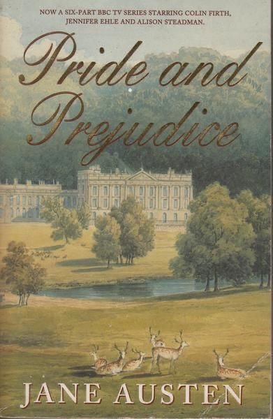

Book Review: "Pride and Prejudice"
By: Jane Austen
As an avid book lover, and as an especially avid classic book lover, I’m almost embarrassed to say that it took me this long to read the celebrated novel,"Pride and Prejudice" by Jane Austen.
Sure, I have seen the movie (shout out to Keira Knightly, darling of all period dramas) , but we all know that doesn’t count.
Not surprisingly, I got through this book in a matter of about 4 afternoons of reading. Although written in the early 19th century, the book reads easily and Austen grabs your attention just enough to make you want to keep going.
immediately connected with her characters and wanted to see how their lives would pan out. I wasn’t disappointed.
For those of you unfamiliar with the story, Pride and Prejudice stars Elizabeth Bennet. Some would say that it also stars her romantic interest, Mr. Fitzwilliam Darcy, but I prefer to read it as Elizabeth’s story. The novel opens with the famous line, “it is a truth universally acknowledged, that a single man in possession of a good fortune, must be in want of a wife.” I read it as no coincidence that Austen chose to open her novel with this phrase. Though subtly, as Pride and Prejudice goes on, the story shows the reader that while a rich man may be on the lookout for a deserving woman, the pressure to find a husband is much more intense for the latter.
The main theme of the novel touches on the fact that in those days (and for many to come), a woman was considered to be faulty or unlovable if she remained unmarried. Not to mention, if a woman remained unmarried and didn’t have the luxury of her father to take care of her, she would face financial and social hardships for the rest of her life. Without some sort of male figure in her life, a woman’s life was destined for misery.
This is especially interesting, as Austen herself remained single for her entire life. She even accepted a marriage proposal once, to turn around and change her mind the following day. Austen was a unique woman for her time, and I admire her greatly.
Reading Pride and Prejudice as feminist literature is nothing new. In the copy that I read from, a 1996 version with an introduction by Vivien Jones, includes commentary from Jones on the feminist aspects of the novel. There are also new versions of the text being produced as recent as in 2016, with Curtis Sittenfeld’s Eligible, which, while not being outwardly feminist in nature, adds modern touches of feminism to the story.
At first glance, the story of Elizabeth Bennet is a typical love story with a very happy ending. Upon closer investigation, there are many layers of Austen’s personal commentary towards life for women in the 19th century. The men in the story are constantly in positions of power, and will usually use this power to take advantage of the women in the story. But, it isn’t all hopeless. Characters such as Elizabeth stand up for themselves, which acts as a beacon of hope for her female readers.
The imbalance of power between Elizabeth and Mr. Darcy runs a bit deeper than the typical male-female relationships of the 19th century. Darcy is a rich and educated man that is free to do as he wants with his life. In fact, he (often) reminds Elizabeth that in marrying her would be to marry below his social rank. Elizabeth is also educated, and very intelligent. But, is she free to roam and decide as she pleases, like Darcy is? Does she have the same agency as Darcy? No. Elizabeth’s only choice to better her life is to find a man (enter, Mr. Darcy), who can grant her more freedom, through his own rights. If it sounds like a grim situation, it was. And, this was the reality of many, if not all women’s lives in England at the time.
The scene in which Elizabeth turns down Mr. Darcy’s marriage proposal is a moment in which Austen has given power to her female main character. Elizabeth listens to Mr. Darcy’s proposal, which seems to have come out of nowhere given his apparent disgust of her and her family. She notes to herself that he seems a bit nervous, and that he “spoke of apprehension and anxiety,” but that she could also tell that “he had no doubt of a favourable answer.” When Elizabeth does turn him down, women across England rejoiced, as a woman finally took her future into her own hands.
There are some that may believe that this moment is irrelevant due to the nature of the happy ending of the novel. To this, I say that I agree with you, up until a point. Of course there is a happy ending: this was 19th century England and in order to be loved by the masses (to whom she hoped to sell her book to), Austen needed to include the seemingly fairytale ending to Pride and Prejudice. Should we shame Austen for this? Should we shame this single 19th century woman for wanting to earn money to support herself? I say no. I always say no to shaming other women.
Leave a Comment: